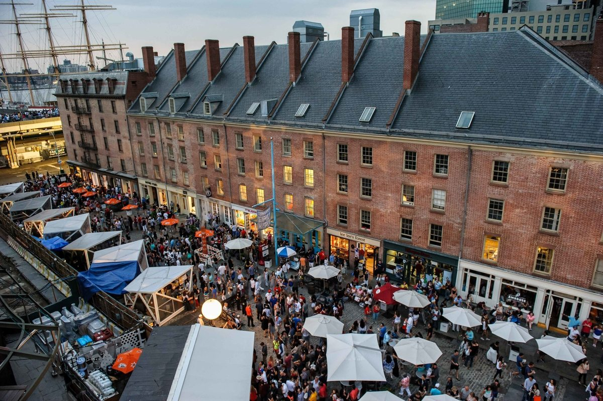

Abby's Guide to New York
Why I <3 NY
New York City was my home for five years before moving to Chicago to start at Kellogg. I love the vibrancy and diversity of the city; it truly never sleeps! The neighborhoods are all distinctly characteristic and full of culture. There is so much to see and do that for first time visitors, the city can seem quite overwhelming. I have found that most of my friends who travel to NYC are not looking for a terribly touristy visit or experience.. they would rather see the city through the eyes of a local! That is why I have created this guide. It is a curated list of all of my New York favorites, must sees, and must dos.
When I was living in New York, I worked in the fashion industry. I was a buyer for the iconic New York brand, DKNY, which stands for "Donna Karan New York". The brand was designed to represent the energy of New York City, and our clothing had a distinctive urban feel. I loved working for a brand that I felt truly connected to! It was fun to travel throughout the city to gain inspiration and to visit our stores.
-

Central Park
One "touristy" thing that I do recommend is to take a trip to central park! It is an oasis among the concrete jungle, and a surreal experience to sit on the grass in the park looking up at the impressive skyline. -

South Street Seaport
Rebuilt and better than ever after Sandy, the South Street Seaport is an often overlooked destination. The charm of the cobblestone roads, portside docks, and historic townhouses, gives one the feeling of being transported back to old New York. Great waterside dining options!